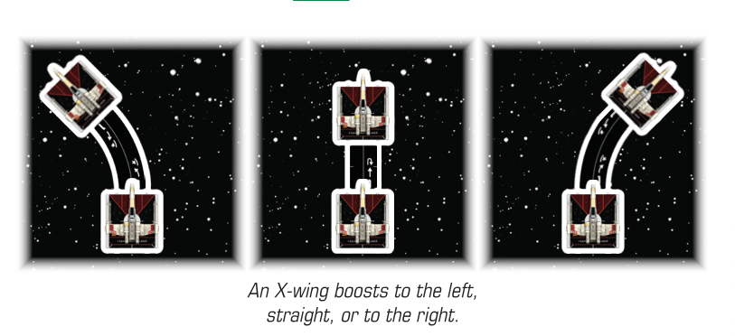

BOOST ()
Boost represents a pilot activating additional thrusters to move farther forward. When a ship performs a action, it boosts by following these steps:
-
Choose the [1 ], [1 ], or [1 ] template.
-
Set the template between the ship’s front guides.
-
Place the ship at the opposite end of the template and slide the rear guides of the ship into the template.
-
Return the template to the supply.

-
When a player declares to boost a ship, that player also declares whether the ship is boosting straight, left, or right.
-
While attempting to place a ship to complete a boost, the boost can fail if any of the following occurs:
-
The ship’s final positions would cause the ship to overlap another ship.
-
The ship would overlap or move through an obstacle.
-
The ship’s final position would cause it to be outside the play area (and therefore would cause that ship to flee).
-
-
If a boost fails, the ship is returned to its prior position before it attempted the boost. If this was part of a action, that action fails.
-
The player cannot choose to fail a boost if the final position would not cause the action to fail.
-
Performing a boost does not count as executing a maneuver but does count as a move.
-
If an ability instructs a ship to boost, this is different than performing a action. A ship that boosts without performing the action can still perform the action this round.